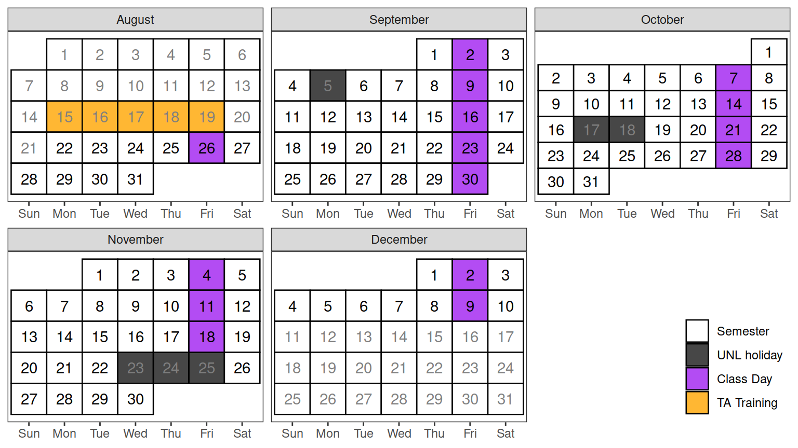

Stat 892: Writing and TA Prep
Syllabus
| Instructor | Class |
|---|---|
| Susan Vanderplas | Location: Hardin 354 (Large Conf Room) |
| Email: susan.vanderplas@unl.edu | Time: Friday 2:30-3:15 |
| Office: Hardin 343D | Office Hours (online): Schedule here |
Course Goals
Your goal, as an instructor or assistant for Stat 218/Stat 380 (or any other course), is to help your students learn statistical concepts. Our primary goal in this course is to help you develop strategies to most effectively teach those statistical concepts to your students. One way to both teach statistical concepts and to gauge your students’ understanding is through the use of writing. The ability to translate “stat speak” into clear non-technical language is one of the best indications that technical concepts in statistics are genuinely understood. Learning how to do this is an effective way to learn - and teach - technical concepts in statistics. We call this process “writing for learning.” We will tak about this concept, and practice “writing to learn” activities throughout the course.
As a second goal of the course, we will also develop writing/critical thinking skills you will need as a teacher. This includes writing clear assignments and exam questions and developing grading rubrics. We’ll spend class time analyzing examples of “good” and “bad” assignments and exam questions, and gain practice writing effective rubrics.
We hope that, through the use of active learning strategies, your classroom will become a learning community for your students. Similarly, our final goal for this course is to foster a vibrant teaching/intellectual community in the department. We hope to stimulate discussions about teaching among all instructors (TAs and faculty) and create a safe environment for idea exchange.
Course Content
The course will follow the basic outline of the STat 218 curriculum. We will try to introduce major topics a couple of weeks before they are scheduled to come up in your class, so you have some advance preparation before you teach them/assist your mentor with teaching them. We will not cover all of the Stat 218 content. Instead, we will focus on the areas with which students most often struggle. For each statistical content area, we will discuss/model/practice how to enhance/assess student learning through the use of low-stakes writing exercises (and even some mid- and high-stakes writing), carefully written questions, grading rubrics, peer evaluation, and others.
The major topics are: - Variation: Using descriptive statistics (numbers, graphs, and plots) to visualize, characterize, and interpret data. - Sampling Distributions: The key to statistics. Really understanding this is a necessary, if not sufficient, condition for understanding all of statistics. This is the make-or-break concept - in Stat 218 and in Stat 883 and 970. - Inference (Interval Estimation and Hypothesis Testing): A corollary to sampling distributions and variation. Understanding the behavior of a statistic tells us about the conclusions we can draw to the larger population of interest.
Class Portfolio
During the semester, you will be asked to collect lesson plans and assessment tools in a course portfolio. The purpose of the portfolio is to provide you with a valuable resource to use with your own class in the future. We will collect the portfolios at least twice during the semester (at mid-term and at the end of the semester). By mid-term, the portfolio should contain a fairly complete plan for the first three weeks of your course. By the end of the semester, you should have a rough draft of the entire semester. Your portfolio should NOT be a carbon copy of your mentor’s materials. The portfolio should be specific to a course (Stat 218/380). If you are assisting with Stat 380 or Stat 801/882, you may choose the course on which to focus your portfolio.
Teaching Journal
It is beneficial to keep a teaching journal, reflecting on your experiences this semester (and during future teaching opportunities). This may include writing about the mentoring experience, how a particular class or activity went, or just comments/ideas/notes for your future teaching reference. We may also throughout the semester pose specific questions as a part of class that you may want to include in your journal.
Grading
Based on class participation (attendance, discussion, writing activities), classroom visits, written work turned in (including the portfolio), constructive completion of peer reviews and timeliness of submitted work.
Class Schedule & Topic Outline
This schedule is tentative and subject to change.
| Date | Topic | Through the use of… |
|---|---|---|
| Aug 26 | Measures of Center, Variability | Assignment construction, peer review, rubrics |
| Sep 2 | Variability | Low-stakes writing, reflection |
| Sep 9 | Exam Construction | Mid-stakes writing, question construction |
| Sep 16 | Sampling Distributions | Exercise construction |
| Sep 23 | Sampling Distributions | Writing to engage students |
| Sep 30 | Sampling Distributions | Benchmarks for sampling distributions |
| Oct 7 | Sampling Distributions | Journals as low-stakes writing activities |
| Oct 14 | Interval Estimation | Writing exercises to gauge understanding |
| Oct 21 | Hypothesis Testing | TBD |
| Oct 28 | Two sample interval estimation | TBD |
| Nov 4 | Two-sample hypothesis testing | TBD |
| Nov 11 | The Big Picture | TBD |
| Nov 18 | Thanksgiving | |
| Dec 2 | Final Exams/Grading | TBD |
| Dec 9 | Wrap-up | TBD |
Course Policies
Assessment/Grading
| Assignments | Weight |
|---|---|
| Participation | 60% |
| Mid-Term Portfolio | 20% |
| Final Portfolio | 20% |
Lower bounds for grade cutoffs are shown in the following table. I will not “round up” grades at the end of the semester beyond strict mathematical rules of rounding.
| Letter grade | X + | X | X - |
|---|---|---|---|
| A | 97 | 94 | 90 |
| B | 87 | 84 | 80 |
| C | 77 | 74 | 70 |
| D | 67 | 64 | 61 |
| F | <61 |
Interpretation of this table:
- A grade of 85 will receive a B.
- A grade of 77 will receive a C+.
- A grade of 70 will receive a C-.
- Anything below a 61 will receive an F.
General Evaluation Criteria
In every assignment, discussion, and written component of this class, you are expected to demonstrate that you are intellectually engaging with the material. I will evaluate you based on this engagement, which means that technically correct but low effort answers which do not demonstrate engagement or understanding will receive no credit.
When you answer questions in this class, your goal is to show that you either understand the material or are actively engaging with it. If you did not achieve this goal, then your answer is incomplete, regardless of whether or not it is technically correct. This is not to encourage you to add unnecessary complexity to your answer - simple, elegant solutions are always preferable to unwieldly, complex solutions that accomplish the same task.
While this is not an English class, grammar and spelling are important, as is your ability to communicate technical information in writing; both of these criteria will be used in addition to assignment-specific rubrics to evaluate your work.
Late Policy
Late assignments will be accepted only under extenuating circumstances, and only if you have contacted me prior to the assignment due date and received permission to hand the assignment in late. I reserve the right not to grade any assignments received after the assignment due date.
Attendance
You are expected to attend class and/or participate virtually. Consistent, repeated failure to attend class or actively participate in the online portions of the course will affect the participation portion of your grade.
If you are feeling ill, please do not come to class. Contact me and I will send you a Zoom link to participate in class remotely (if you are feeling up to it), or schedule an appointment with me to meet virtually once you are feeling better.
Expectations
You can expect me to:
- reply to emails within 48 hours during the week (72 hours on weekends)
- be available in class to assist with assignments
- be available by appointment for additional help or discussion
I expect you to:
- Read any assigned material before class
- Engage with the material and your classmates during class
- Seek help when you do not understand the material
- Communicate promptly if you anticipate that you will have trouble meeting deadlines or participating in a portion of the course.
- Do your own troubleshooting before contacting me for help (and mention things you’ve already tried when you do ask for help!)
- Be respectful and considerate of everyone in the class
Face Coverings
I have medical issues and will wear a face covering during our class meetings; I ask that you also wear a face covering during class to reduce the impact of COVID 19, flu, and other circulating illnesses on class attendance.
Inclement Weather
If in-person classes are canceled, you will be notified of the instructional continuity plan for this class by Canvas Announcement. In most circumstances where there is power in the Lincoln area, we will continue to hold class via Zoom.
Academic Integrity and Class Conduct
You will be engaging with your classmates and me through in-person discussions, zoom meetings, and collaborative activities. It is expected that everyone will engage in these interactions civilly and in good faith. Discussion and disagreement are important parts of the learning process, but it is important that mutual respect prevail. Individuals who detract from an atmosphere of civility and respect will be removed from the conversation.
Students are expected to adhere to guidelines concerning academic dishonesty outlined in Article III B.1 of the University’s Student Code of Conduct. The Statistics Department academic integrity and grade appeal policy is available here.
Required University Information
See .